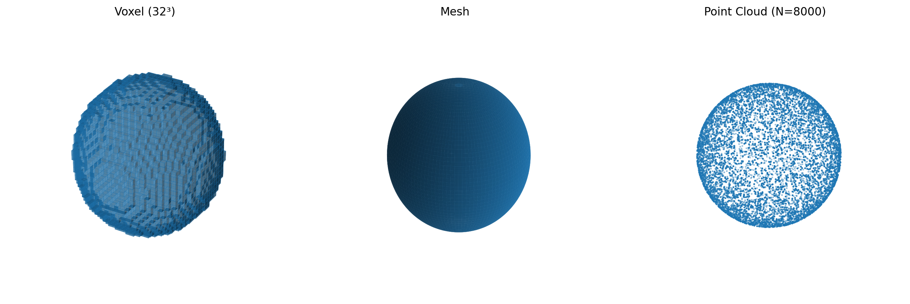

背景知识¶
1. 3D 表示方法概述¶

1.1 体素¶
体素是三维空间中的像素，与二维图像中的像素类似，但增加了深度维度。在一个三维的形状中，每个体素用来表示这个位置是否被形状占据。
- 优点：直观，易于理解
- 缺点：储存 voxel 的空间复杂度是 \(O(n^3)\)，通常计算复杂度较高。
1.2 网格¶
网格使用点、线、面来描述 3D 形状。
- 优点：紧凑、直观，适合渲染处理
- 缺点：依赖拓扑结构，通常需要 watertight mesh，需要较为复杂的预处理
1.3 点云¶
点云由一组离散的点组成，用来描述在 3D 形状上的点。
- 优点：无需拓扑结构，无需预处理，表示灵活。
- 缺点：点云的表示是离散、稀疏的，缺乏连续性。
位置编码器与时间编码器¶
位置编码器¶
动机¶
普通的 MLP 或线性层在处理输入时，对高频信息的建模能力较弱。为了让模型能够捕捉局部几何的细节，我们需要引入多尺度的正弦/余弦函数，将输入坐标映射到更高维空间。这种方法本质上是傅里叶特征映射。
方法¶
对于给定的位置 \(x \in \mathbb{R}\) 和频率数量 \(L\)，位置编码定义为：
不同频率的正弦/余弦项可以让模型感知到从低频到高频的几何变化，从而提升对复杂表面形状的表达能力。 在三维点云中，我们对 \((x,y,z)\) 的每一维分别做 Fourier 映射，再拼接得到高维的点位置编码。
时间编码器¶
动机¶
在流匹配中，点的运动轨迹与时间步 \(t\) 强相关。为了让模型能够理解“在不同时间步点应如何流动”，我们同样需要一种多尺度的时间表示。
方法¶
对于给定的时间 \(t \in [0,1]\) 和频率数量 \(L\)，时间编码为：
与位置编码类似，不同频率的分量让模型同时感知短程和长程的时间依赖。
在实现过程中，时间编码器与
Linear+SiLU+Linear的结构共同封装在TimeEncoder内。
自适应归一化层（Adaptive Layer Normalization, AdaLN）¶
在流匹配中，输入不仅包含点的坐标特征 \(x\)，还依赖例如时间步 \(t\) 等额外的条件变量。不同时间下，数据分布差异显著。若仅使用固定参数的标准 Layer Normalization，模型难以同时适配所有时间分布。 因此，我们引入自适应归一化层（AdaLN），使归一化过程能够随条件动态调节。
标准 Layer Normalization¶
给定输入 \(x \in \mathbb{R}^d\)，标准 LayerNorm 的计算过程为：
通常会再引入可学习的缩放与偏移参数 \(\gamma, \beta\)：
这里的 \(\gamma,\beta\) 是与输入无关的全局参数。
自适应归一化层¶
在 AdaLN 中，缩放与偏移不再是固定参数，而是由条件向量（在流匹配中即时间嵌入 \(t_{\text{emb}}\)）动态生成：
于是有：
Shift & Scale & Gating¶
在流匹配（Flow Matching）的 Velocity Estimator 中，除了基本的归一化外，还引入了 Shift、Scale 和 Gating 机制，用于根据时间步 \(t\) 对特征进行动态调制。
1. Shift & Scale¶
对于输入特征 \(x \in \mathbb{R}^d\)，首先通过 LayerNorm 或 AdaLayerNorm 得到归一化结果 \(x_{\text{norm}}\)。
接着利用时间嵌入 \(t_{\text{emb}}\) 生成两个向量：
然后对归一化后的特征进行调制：
这样，特征的分布会随着时间步 \(t\) 的变化而自适应地调整。
2. Gating¶
除了 Shift & Scale 外，模型还引入了 门控（Gating）机制，即通过一个 sigmoid 激活函数将时间嵌入映射到 \([0,1]\) 范围：
并将其作用在输出上：
其中 \(f(\cdot)\) 表示 Cross Attention 或 MLP 等子模块的输出。
门控机制的作用是 控制信息流的强弱：
- \(g \approx 0\) 时，抑制该时间步的特征；
- \(g \approx 1\) 时，完全保留该时间步的特征；
- \(g\) 在 \((0,1)\) 之间时，相当于“软选择”，灵活调节特征强度。